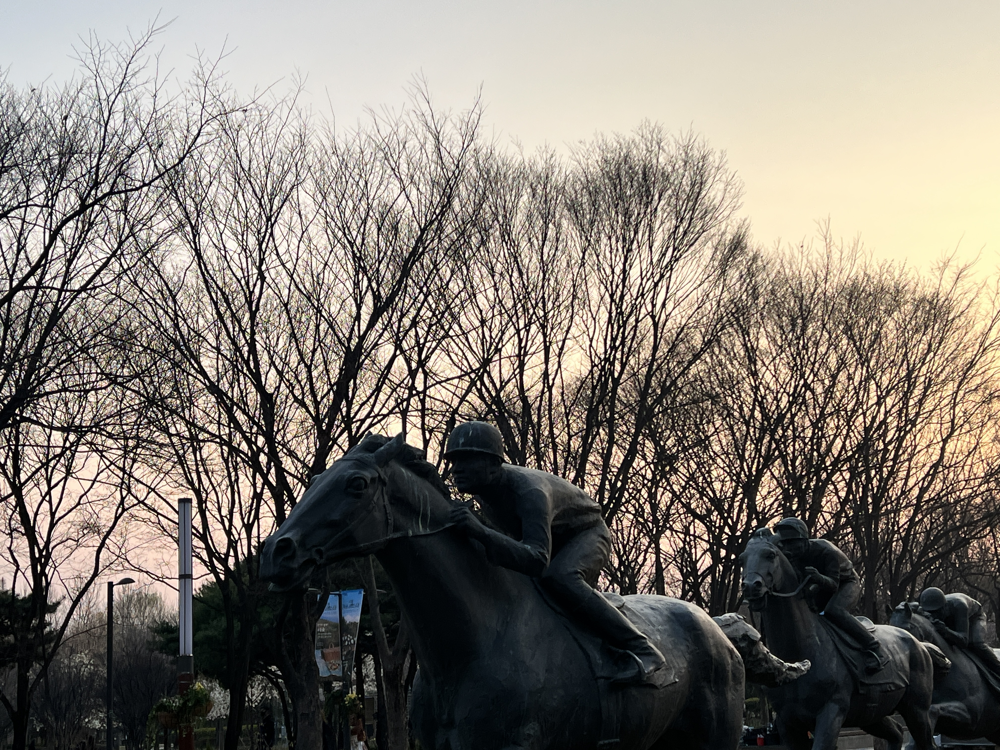
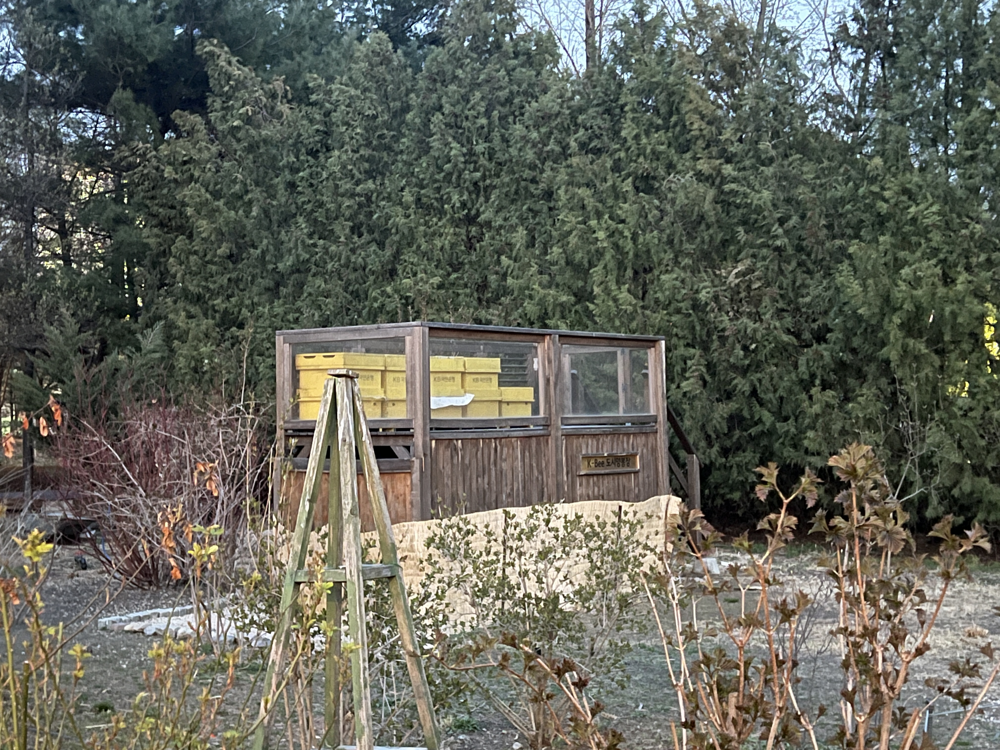

나란 사람
안녕하세요? 현재 보고 계신 웹페이지 제작자 김진영입니다. 저라는 사람을 사람을 소개해보겠습니다. 저는 2003년 출생, 만 22세입니다. 저는 현재 서울특별시 ***에 부모님, 형제자매, 반려견과 함께 거주중입니다. 저는 건국대학교 컴퓨터공학부 2학년 재학 중에 있습니다. 25년 1학기에 듣는 강의는 웹프로그래밍, 자료구조, 수치방법론, 객체지향프로그래밍, 생활속의 부동산, 인문사회글쓰기, 사회봉사가 있습니다. 취미는 모터사이클 라이딩, 필름카메라 사진 촬영을 하고 있습니다. 제 모습이 궁금하시다면 아래를 확인해주세요.
컴퓨터공학부에 진학한 이유
2019년말, 고등학교 1학년 재학 중에 친구에게 C 언어책 을 선물받았습니다. 그 전까지 매뉴얼에 따라 컴퓨터를 다뤘었지만, 책을 통해 프로그래밍 언어를 배우면서 내가 명령하는 대로 컴퓨터가 동작한다는 것이 흥미로웠습니다. 그렇게 컴퓨터 과학과 다른 기술들을 찾아보고 공부했고, 컴퓨터공학부로 진학했습니다. 다행인 점은 아직까지 회의감이나 지루함을 느끼지 않고 있다는 것입니다. 좋아하는 것을 공부하고, 나중에 직업으로도 삼을 수 있다는 것은 운이 좋다고 생각하고 있습니다.
미래에는
군복무를 군사경찰 수사과에서 했는데 그 당시 압수 증거품(전자기기)에 대해 포렌식 요청하여 범죄증거를 찾아 사건 송치한 사례를 경험했습니다. 이 경험에서 정보보안과 포렌식 분야에 관심을 가졌습니다. 세상에 새로운 기술이 개발되고, 그 기술로부터 파생된 다양한 서비스들과 제품들에 대한 보안의 중요성은 높아지고 있습니다. 반대로 기술이 발전하여 높은 익명성으로 인해 범죄 피의자의 전자기기를 확보해도 범죄 증거를 확보하지 못해 사건이 종결되는 등의 문제가 발생하고 있습니다. 개인 프라이버시의 자유와, 범죄 예방 사이의 균형을 맞추는 전문가에 도전해보려고 합니다.
짝궁을 소개합니다
제 짝궁은 우현준입니다. 우현준이라는 사람을 20문 20답으로 소개해보겠습니다. 2004년 경기도 성남시 분당 출생, 만 21세입니다. 현재 용인 수지 거주중이며, 키 179cm, 몸무게 64kg으로 저보다 약 3cm 크면서 약 7kg 가볍습니다. 저와 함께 건국대학교 컴퓨터공학부 2학년에 재학 중이나 24학번으로 2년 후배입니다.
제가 보는 짝궁은 이렇습니다. 준수한 외모, 밝은 피부, 큰 키를 가진 공대생입니다. 그래서인지 교양에서 만난 여학우와 긍정적인 연락을 하고 있다고 합니다. 개인적으로 긍정적이고 행복한 결말로 이어지길 바라고 있습니다.
짝궁에 대한 20문 20답
다음은 제 짝궁 우현준에 대한 20문 20답입니다. 같이 보시겠습니다.
MBTI
짝궁은 ISTP입니다. 내향적/감각 및 현실적/논리 및 사고적/자율 및 유동적인 성향입니다. 특히 자율적이고 유동적인 성향이 강한데, 실제로 갑자기 당일에 숙소 예약도 없이 친구와 함께 여행을 떠난 적이 있을 정도입니다.
야행성 VS 아침형 인간
짝궁은 굉장한 야행성입니다. 취침시간이 보통 5 ~ 6시이고 기상 시간이 오후 3시입니다. 다만 개강을 하고 나서는 학교를 다니기 위해 아침형으로 생활 중입니다.
추구하는 패션 스타일 혹은 현재 패션 스타일
짝궁은 패션에 큰 관심을 보이고 있지 않습니다. 그렇다고 아예 신경을 꺼버린 수준은 아니고, 보통 미니멀한 패션 스타일을 추구하고 있습니다. 최근에는 힙합 패션 스타일을 도전하고 싶어합니다.
가장 좋아하는 음식 TOP 2
짝궁이 가장 좋아하는 음식 1위는 빵입니다. 밥 대신 빵만으로 살 수 있을 정도입니다. 개인적으로는 짝궁의 건강이 걱정됩니다. 빵은 혈당을 급격하게 변화하게 하는 혈당 스파이크를 유발하기 때문입니다.
짝궁이 두번째로 좋아하는 음식은 국밥입니다. 주변 사람들이 질려할 정도로 먹는다고 합니다. 이 얘기를 듣고 나서 영화 ‘변호인’의 주인공 변호사처럼 맨날 돼지국밥을 먹는 짝궁의 모습을 상상했습니다. 개인적으로도 국밥은 소울 푸드기 때문에 맨날 먹는다는 말에 공감했습니다.
건국대학교 캠퍼스 안에서 가장 좋아하는 곳은 ???이다
짝궁은 교내 캠퍼스에서 가장 좋아하는 것으로 공학관을 꼽았습니다. 그 이유로 가장 강의를 많이 듣는 장소면서 자주 있는 건물이기 때문입니다. 저 역시 새천년관과 공학관이 주요 건물입니다. 하지만 제 개인적인 최고의 곳은 상허기념도서관 4층 자료실입니다. 이유는 조용한 분위기, 노트북 충전이 가능한 콘센트, 바로 옆 책꽂이에는 수많은 컴퓨터과학 관련 도서들이 있기 때문입니다.
취미
짝궁은 친구들과 축구하는 것과 침대에 누워 유튜브 보는 것을 취미로 삼고 있습니다. 사교적이고 활동적인 취미 하나와 정적이고 개인적인 취미 하나씩을 가지고 있습니다. 아쉽게도 저와 겹치는 취미는 없어서 나중에 같은 취미 활동을 하는 건 불가능할 것 같습니다.
공부에 집중이 되지 않거나 스트레스를 받을 때 나는 ???을 한다
짝궁은 집중이 되지 않는다면 강제로 마인드 컨트롤로 집중하고 있다고 생각하거나 그래도 정말 집중이 되지 않으면 잠시 휴식 시간을 가집니다. 너무 많은 스트레스를 받았다면 잠시 잠을 잡니다. 저는 반대로 집중이 되지 않는다고 느끼면 바람을 쐼과 동시에 흡연으로 머릿속을 잠시 쉬게 합니다. 잠을 자는 것도 좋아하지만 시간 대비 효율이 좋지 않아 최후의 수단으로 사용합니다.
최근의 소확행(소소하지만 확실한 행복)
짝근의 최근 소확행은 늦은 시간까지 침대에 누워 유튜브 보는 것이 소확행입니다. 일주일 중 쉬는 날이 일요일 밖에 없어 토요일 저녁부터 침대에 누워서 유튜브를 봅니다. 저도 유튜브에서 재밌는 영상들을 보는 건 좋아하지만 지금 당장 피로함을 푸는게 재밌는 영상을 보는 것보다 더 우선이기에 잠을 자는 편입니다.
대학 1학년 신입생에게 꿀팁 1가지만을 알려준다면 ???을 말해줄 것이다
짝궁은 1학년 신입생들에게 동아리 활동하는 것을 추천합니다. 동아리 활동을 하며 만난 사람들이랑 재밌는 활동을 경험했기 때문에 동아리 활동을 추천한다고 합니다. 저도 만약 신입생들에게 같은 말을 해주고 싶습니다. 저는 동아리 활동에 적극적으로 참여를 하지 않았기에 이를 놓친 게 아쉽습니다.
마음에 드는 여자 스타일
짝궁이 좋아하는 여자 스타일은 성격이 어른스럽고, 배울 점이 있는 사람이었으면 좋겠다고 합니다. 이유로 같이 있을 때 의미있는 시간을 보낼 것 같아서입니다. 그리고 외적으로 쎄게 생긴 것을 선호합니다. 청순하고 연한 외모보다는 강렬하고 인상적인 모습을 선호한다고 볼 수 있습니다. 개인적으로 다행이라고 생각합니다. 제가 선호하는 스타일과 겹치지 않기 때문에 나중에 서로 같은 여자를 좋아하는 불상사는 발생하지 않을 것 같습니다.
연상 VS 연하 VS 동갑
짝궁은 연애 상대로 연상 = 동갑 > 연하로 결정했습니다. 애인이 자신에게 의지하는 것 보다 스스로 헤쳐나가는 모습을 더 좋아하기 때문입니다. 역시 저랑 겹치지 않습니다. 저는 애교와 함께 때로는 내숭을 부리면서 저에게 의지하는 귀여운 연하를 더 선호합니다.
팀프로젝트에서 만난 팀원 중 가장 최악의 빌런은 혹은 최고의 히어로는?
짝궁이 팀프로젝트에서 만난 최악의 팀원은 적극적 의사를 내비쳤으나 그 후에 결과물도 없고 연락도 보지 않는 ‘입만 살았다’형이며, 최고의 팀원은 각 팀원들에게 명확한 지시와 내리며 프로젝트의 방향을 잡는 유형이라고 합니다. ‘입만 살았다’ 유형은 저도 겪어봤지만 상당히 공포스런 유형입니다. 분명 초반 회의 때만 해도 전혀 낌새가 없지만 프로젝트 제출 혹은 발표일이 가까워지면 갑자기 카운트다운이 시작된 시한폭탄으로 변합니다. 초후반이 가서야 시한폭탄이었음을 깨닫기에 공포스럽다고 할 수 있습니다.
좋아하는 음악 혹은 가수
짝궁은 다양한 장르의 음악을 듣습니다. 그 중에서도 ‘김뮤지엄’이라는 아티스트의 노래를 자주 듣습니다. ‘마크툽’과 같이 목소리가 마음에 든다고 합니다. 가사를 곱씹으며 듣기보다는 곡의 전체적인 멜로디 분위기가 좋다고 합니다. 저도 가사보다는 멜로디 위주의 음악 감상을 하고 있습니다. 멜로디가 좋은 노래를 충분히 듣고 나서 가사의 의미를 해석하기도 합니다.
내가 아는 맛집중 ???은 꼭 가야 한다
짝궁의 맛집 1순위는 여의도에 위치한 화목순대국입니다. 후추향이 강해 자주 먹는 건 불가능하지만 가끔씩 먹는다면 완전 맛있다고 합니다. 국밥을 좋아해서인지 맛집 1순위도 국밥집입니다. 제 맛집 1순위는 문래돼지불백입니다. 돈이 많다면 매일 먹고 싶습니다.
학기초 혹은 새해 목표로 실천 중인 것
짝궁은 새해 목표로 삼은 것이 올해는 꼭 헬스장을 꾸준히 가는 것이었습니다. 그러나 아직 시작도 안했다고 합니다. 짝궁은 1학기 중간고사 기간이 끝나면 다시 목표를 실천하기로 다짐했습니다. 저 또한 꾸준히 웨이트 운동을 했으나 학기 중반으로 갈수록 많아지는 과제와 공부의 양 때문에 웨이트 운동의 우선순위를 뒤로 둘 수 밖에 없었습니다. 중간고사 기간 이후로 다시 열심히 해야겠습니다.
데이트 혹은 친구들과 놀 때, 미리 계획하기 VS 일단 만나고 뭐할지 결정하기
짝궁은 미리 계획하기 보다 유동적이고 자유로운 성향에 걸맞게 일단 만나고 봅니다. 일단 시간과 장소만 정한 다음 만나고 나서야 뭐할지 고민합니다. 이 부분은 저와 비슷합니다. 저도 계획을 세우려고 해도 결국 ‘일단 여기서 만나고 결정하자’는 결론으로 마무리됩니다.
군대를 가야한다면 나는 ???으로 가고 싶다
짝궁은 공군으로 입대하고 싶어하나 커트라인 점수가 높은 편이기에 주변 사람들이 많이 간 육군으로 가게 될 것이라고 합니다. 개인적으로 빨리 군복무를 마치고 싶다면 육군을, 전공에 대한 감을 잃지 않으면서 편안한 생활을 하고 싶다면 공군으로 가는 것이 적절하다고 생각합니다.
쉬는 날에 주로 ???을 한다
짝궁은 쉬는 날에 침대에 누워서 유튜브를 보거나 친구들과 PC방에 가서 같이 게임을 합니다. 친구들과 만나면 보통 게임을 한다고 합니다. 저는 쉬는 날에 제 바이크를 정비하거나 바람 쐬러 서울 근교로 드라이브를 가는 편입니다.
대학교 졸업후 ??? 분야에 종사하고 싶다
짝궁은 아직 세부 분야를 정하지 않았습니다. 다만 규모가 큰 기업의 개발자로서 다양한 경험을 하고, 컴퓨터 공학 외의 다른 분야의 사람들과 협업을 해서 새로운 스타트업 회사를 창업하고 싶어 합니다. 저도 한때 사업을 시작하고 싶다는 의지가 있어 실제로 준비해보았지만, 준비하는 과정에서 생각보다 사업이라는 것은 많은 노력과 준비가 필요하다고 느꼈습니다. 지금은 제 능력이 역부족이라는 것을 체감해 잠시 중지해뒀습니다. 언젠가 충분한 능력과 함께 의지가 생긴다면 다시 시작해보고 싶습니다.
매일매일 사람들과 만나기 VS 매일매일 혼자 있기
짝궁은 매일 사람들과 만나기 보다 혼자 있기를 선택했습니다. 아무래도 내향적 성향이 있다 보니 굳이 매일 사람들을 보고 만나는 것보다 혼자 있는 것이 더 편하다고 합니다. 저도 많은 사람들을 매일 만나는 건 굉장히 피로한 하나의 작업이라고 생각합니다. 그래서 더더욱 아는 사람들만 만나고 보는 것 같습니다.
이렇게 제 짝궁 우현준의 소개를 마치겠습니다. 20문 20답에 외에도 많은 이야기를 짝궁과 했습니다. 한층 더 가까워진 느낌이 들어서 즐겁습니다.
서울숲을 소개합니다
서울숲은 강북에 위치한 약 15만평 크기의 서울의 대형 공원입니다. 대한민국 수도 서울의 대표적인 공원 중 하나입니다. 큰 부지에 다양한 스타일의 길과 시설들이 있습니다. 서울숲은 2005년 당시 약 2352억원의 거금을 들여 완성된 공원으로, 서울시민들에게 잠시 숨을 돌릴 수 있는 여유를 제공하는 곳입니다. 다양한 스타일의 체험 프로그램과 시설, 테마숲길 등 즐길 거리와 볼 거리들이 있습니다. 특히 예전 경마장 등의 시설들을 완전 철거하지 않고 일부 콘크리트 골격을 남긴 후에 공원과 어울려 흥미롭습니다.
서울숲 공원길 선정 이유
"지금 이곳에 공원을 만들지 않는다면,
100년 후에는 이만한 크기의 정신병원이 필요할 것이다."
프레더릭 로 옴스테드, 뉴욕 센트럴파크 설계자
급격한 경제 성장을 거치며 단시간에 발전을 해온 대한민국의 수도 서울은 효율성과 기능성을 최우선으로 하는 도시 계획 속에서 시민들의 삶의 질과 행복의 우선순위는 후순위였습니다. 콘크리트 빌딩 숲은 밀집되어 있고, 보행자가 여유롭게 다닐 수 있는 공간보다는 자동차의 원활한 흐름을 위한 도로망에 집중해왔습니다. 물론 자동차는 현대 사회의 필수적인 이동 수단으로서 빠른 속도와 편리함을 제공하지만, 때로는 그 속도감 때문에 주변의 아름다움을 놓치게 하고, 사람들과의 상호작용 및 주변 환경의 상호작용을 단절시키는 결과로 이어졌습니다. 이와 달리, 도보로 이동하는 경험은 사람들에게 다양한 상호작용을 하게 합니다. 길을 따라 구경할 수 있는 개성 넘치는 상점, 북적거리는 길에서 마주치는 다양한 사람들의 모습, 반려동물 등의 다양한 요소들과 마주치게 합니다. 홍대 거리, 건대입구 거리, 연남동, 성수동과 같은 공간들이 사람들에게 인기인 이유도 바로 이러한 경험을 할 수 있기 때문이라고 생각합니다.
서울숲은 숨 막히는 일상에서 벗어나 도보를 통해 주변 환경을 만끽할 수 있는 공간입니다. 각각의 매력이 있는 여러 숲길을 따라 이동하면서, 잠시 멈춰 서서 활짝 핀 꽃을 바라보며, 넓은 잔디밭에 누워 하늘을 바라보는 여유를 느껴볼 수 있습니다. 서울숲은 단순히 크기만 거대한 공원이 아닙니다. 바쁜 경쟁 사회의 중심에 위치한 중요한 휴식처, 힐링 스페이스입니다. 이러한 이유로, 저는 시민의 가장 큰 휴식처인 서울숲, 서울숲 공원길을 소개하고자 합니다.
이렇게 다녀오세요
서울숲 공원길은 약 2km, 1시간이 소요되는 산책길입니다. 서울숲 앞 상점가에서 시작해 군마상을 기준으로 반시계 방향으로 서울숲 공원길을 소개시켜드리겠습니다.
준비물은 아래와 같습니다. 편안한 신발은 필수이고, 목마를 경우를 대비해 물을 챙겨가도 좋지만 공원내 편의점과 근처 카페를 이용할 수 있습니다.
준비물
편안한 신발과 복장 : 대부분 흙길로 되어 있어 필수
돗자리 : 잔디밭에 피크닉을 즐길 때 필요
선크림, 모자, 선글라스(하계) : 잔디밭이나 공터의 경우 그늘이 없어 필요
서울숲은 서울숲역과 뚝섬역에 가까이 위치해 있습니다. 물론 주차장도 마련되어 있어 자가용을 통해 올 수도 있습니다. 하지만 자가용을 이용하시는 건 추천드리지 않습니다. 현재 25. 4. 1. 부터 요금을 부과하지 않아 많은 자동차들이 주차장을 이용하고 있어 혼잡하니 이 점 유의하세요.
서울숲 주차장
주소 : 서울 성동구 성수동1가 643
요금 : 1시간당 2400원
운영시간 : 07 ~ 23시
* 2025년 4월 1일부터 별도 공지시까지 무료 개방
대중교통을 이용하신다면, 뚝섬역 2호선에서 도보 약 15분, 서울숲역 수인분당선에서 도보 약 5분이 소요됩니다. 그 외 버스는 이렇습니다.
지하철
2호선 뚝섬역 8번 출구: 도보 약 15분
수인분당선 서울숲역 3번 또는 4번 출구: 도보 약 5분
버스
서울숲 정류장: 121, 141, 145, 148, 2012, 241, 2413, 463
서울숲 앞 상점
서울숲 앞에 위치한 상점가입니다. 서울숲을 가기 전 혹은 서울숲을 다녀오고 나서 상점가도 둘러볼 수 있습니다. 멋진 사진을 찍거나, 팝업스토어에 들려 구경할 수 있습니다. 언더스탠뉴 에비뉴에 가보는 것을 추천합니다.
서울숲 공원길 중간 끝 지점인 군마상부터 시작하겠습니다. 군마상은 서울숲 공원길의 입구에서부터 보이는 동상입니다. 사람이 말 위에 올라타 경주를 하듯이 열심히 달리는 모습인데, 서울숲 지역에 경마장이 존재했음을 알수있게 하는 동상입니다.

길을 걷다보면 스케이트 공원이 보입니다. 탐방 당시에 부녀가 함께 스케이트를 타고 있는 모습을 보았습니다. 특히 단순 직진과 회전 코스가 외에 크고 작은 다양한 오브젝트들이 설치되어 있어 멋진 퍼포먼스를 구경할 수 있습니다.
서울숲을 탐방하던 중 휴식이 필요하다면 스케이트 공원 바로 앞 상가에 있는 카페에서 잠시 목을 축이거나 휴식을 가질 수 있습니다.


가족 마당으로 가는 길입니다. 길은 흙길로 되어있습니다. 가족 마당으로 가는 중간에 음수대가 위치했습니다. 탐방 당시 깨끗한 물로 갈증을 해소할 수 있었습니다. 음수대의 특징으로 다양한 높이의 음수대가 설치되어 있습니다. 이는 어린이부터 어른까지 마실 수 있게 되고, 각각의 음수대가 설치되어 있는 방향 또한 같은 방향을 바라보는 것이 아닌 제각기 다른 방향을 향해 설치 되어 있어 주변 환경과 어울려 설치되었다고 생각할 수 있습니다.

서울숲은 반려동물과 함께 할 수 있는 곳입니다. 위 사진을 참고해주세요. 목출을 착용, 맹견 입마개 착용, 배설물 방치 금지 등 기본적인 수칙을 지킨다면 동행이 가능합니다.

서울숲은 매우 넓은 잔디밭이 있습니다. 당시에는 근처 대학생들과 여유를 즐기러 나온 시민들이 있었습니다. 돗자리를 지참해서 하늘을 보며 멍때린다면 그게 행복이 아닌가 생각합니다.

가족 마당을 지나 코스를 따라 숲속길로 가는 중간에 오작교를 볼수 있습니다. 견우와 직녀 이야기가 생각나게 만드는 이 조그마한 다리는 연인과 함께 온다면 좋을 것 같습니다.


이곳은 숲속길입니다. 높은 나무들이 우거져 있어 여름에도 시원한 그늘길을 조성해줍니다. 중간 중간 벤치도 위치해 있어 사계절 내내 걸어다니기 좋은 길입니다. 이 숲속길을 거닐다 중간에 위를 올려다 보면 생각보다 높이 솟구친 나무의 모습에 아름답다는 생각이 듭니다.
많은 분들이 서울숲다리와 헷갈릴 수 있는 서울숲 보행교입니다. 이름 그대로 사람들을 위한 다리이며 서울숲을 가로질러 한강수변공원과 이어져 있습니다. 이 다리로 올라가면 생태숲을 비롯해 다양한 야생동물을 확인할 수 있습니다. 서울숲 내에서 비교적 높이가 높은 편이라 서울숲을 한눈에 다 담을 수 있습니다. 보행가교 아래에 수변휴게실 및 커뮤니터 센터가 위치해 있습니다. 커뮤니티 센터는 이용시 따로 예약해야 하니 서울숲 홈페이지를 참고해주세요.


공원길을 가다 보면 중간 중간 철조망이 있는 펜스가 보입니다. 이곳은 아리수 정수센터로 서울시민들에게 깨끗한 물을 제공하고 있는 곳입니다. 국가중요시설이기 때문에 삼엄한 보안을 보여주고 있습니다. 서울숲 내 안내판이나 표지판은 따로 정수센터를 안내하지 않기 때문에 이곳으로 접근하지 않도록 주의가 필요합니다. 국내 위성사진에서도 공개되지 않는 곳이기에 사진도 블러처리했습니다.
수많은 자동차들이 용비교와 강변북로로 이어지는 이 서울숲다리를 지나갑니다. 저도 등하교할 때 이 곳을 지나다니는데요. 이 다리 아래에는 평상이 위치해 있습니다. 다리가 그늘의 역할을 하면서 평상 위에서 쉴 수 있는 것입니다. 개인적으로 이 다리를 지하화를 하여 자동차가 유발하는 소음과 환경오염물질을 서울숲을 이용하는 시민들로부터 분리하는 것이 옳다고 생각합니다. 미관상으로도 어울리지 않습니다.
용비교와 강변북로를 잇는 높은 서울숲다리는 많은 차량들이 쉴 새 없이 지나다니는 곳입니다. 아이러니하게도 이 다리 아래에는 시민들이 잠시 앉아 쉴 수 있는 평상이 마련되어 있습니다. 다리 그늘이 햇볕을 막아주는 덕분에 잠시 더위를 피할 수는 있지만, 끊임없이 들려오는 차량 소음과 매연은 쾌적한 휴식을 방해하는 요소입니다. 개인적으로는 이 다리를 지하화하여 차량 통행으로 인한 소음과 환경 오염 물질로부터 서울숲을 이용하는 시민들을 보호하고, 공원의 미관을 더욱 아름답게 조성하는 것이 훨씬 더 가치 있는 일이라고 생각합니다. 현재의 모습은 자연과 인공 구조물이 조화롭지 못하고 다소 이질적인 느낌을 줍니다.
개화한 벚꽃이 길게 늘어져 있는 벚꽃길입니다. 바람이 세게 불 때 마다 떨어지는 벚꽃잎이 특별한 분위기를 연출합니다. 연인과 함께 이 길을 거닐면서 벚꽃을 감상하면 좋겠습니다.

공월길을 걷다 보면 중간 중간 다양한 오트젝트들이 존재합니다. 소원의 폭포는 절대 폭포라고 생각할 수 없는 작은 규모로 구성되어있습니다. 오히려 작은 규모 때문인지 부담없이 소원을 빌어볼 수 있지 않을까 생각합니다. 토끼를 구경할 수 있는 작은 동물의 집이 있습니다만 아쉽게도 동물의 집은 리모델링 중이라 토끼를 구경할 수 없었습니다.
다음으로 곤충식물원입니다. 100여종의 열대 식물과 곤충, 파충류, 양서류를 볼 수 있습니다. 탐방 당시는 운영시간 이후라 구경할 수 없어서 아쉬웠습니다
곤충식물원
이용시간 : 10:00 ~ 17:00(4시30분까지 입장가능), 월요일 휴관
* 동절기(11~2월) 단축운영 : 10:00~16:00(3시30분까지 입장가능), 월요일 휴관
곤충식물원 옆에 CU 편의점과 화장실이 있어 잠시 재정비가 가능합니다. 반려동물의 목줄을 걸어놓을 수 있는 걸이대도 마련되어 있어 편하게 시설을 이용할 수 있습니다. CU 편의점은 08 ~ 20시까지 이용 가능하다고 나와있으나 탐방 당시 19시경이었는데도 닫혀 있었습니다. 이점 참고하세요.

이 곳은 옛날 시설들의 골격을 그대로 보존한 다음 공원과 조화롭게 구성한 갤러리 정원이라는 곳입니다. 특별한 구경거리나 체험거리가 있는 건 아니지만, 과거 콘크리트 구조물과 덩쿨들이 뒤엉켜 정원을 이루고 있는 포인트를 중점으로 둘러보면 좋습니다.
정수 센터앞에는 정사각형 모양의 잔디밭이 있습니다. 가족마당 만큼 넓은 건 아니지만 돗자리를 펼쳐도 될만한 곳입니다.
정수 센터 맞은편에는 야생벌 서식지가 있습니다. 설명에 따르면 가위벌, 애꽃벌과 같은 다양한 야생벌이 집을 짓고 살고 있다고 합니다. 약간 무서워서 자세히 살펴볼 순 없었습니다.
코스 후반부에는 조남호 작가의 공공미술 프로젝트 "Ecological Matrix: 숨쉬는 그물"이 설치되어 있습니다. 다공성 목재로 이루어진 이 구조물 내부에서는 할둔의 "호흡망"이라는 빛의 신호 기반 미디어 아트 작품이 상영되고 있다고 합니다. 예술적인 깊이는 잘 알지 못하지만, 공대생인 저에게 "Matrix"라는 단어가 친숙하게 다가왔습니다.
일렬로 늘어선 메타세쿼이아 나무 옆에는 길쭉한 직사각형 모양의 얕은 연못이 자리하고 있습니다. 연못의 수면은 주변 풍경을 비추어 구경하는 재미가 있습니다. 바라보는 위치에 따라 다양한 풍경을 볼 수 있습니다.


방문 당시에는 더 나은 공원 환경을 위해 도색이나 점검이 진행 중인 기물들이 있었습니다. 안전을 위해 불안정해 보이는 기물에는 가까이 가지 않는 것이 좋습니다.
결론
서울숲은 단순히 한 번만 방문할 수 없습니다. 모든 것을 다 관람하고 즐길 수 없을 뿐 더러 각 계절마다 그 계절에서만 느낄 수 있는 특색이 있기 때문입니다. 놀이공원 같이 1년에 한 두번 가는 것이 아닌, 카페 같이 자주 자주 들리는 곳으로 생각했으면 좋겠습니다. 이번 주말은 한 번 서울숲으로 떠나보세요.